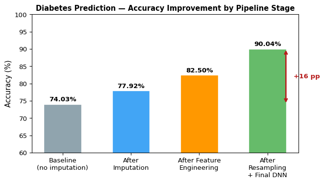
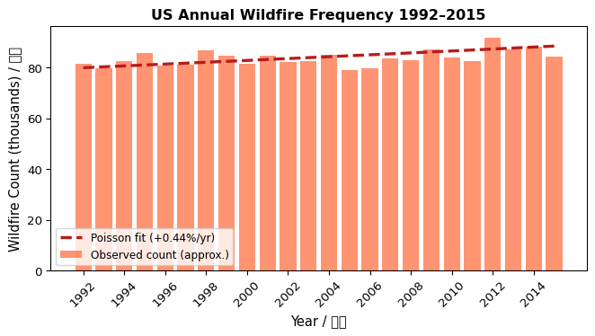
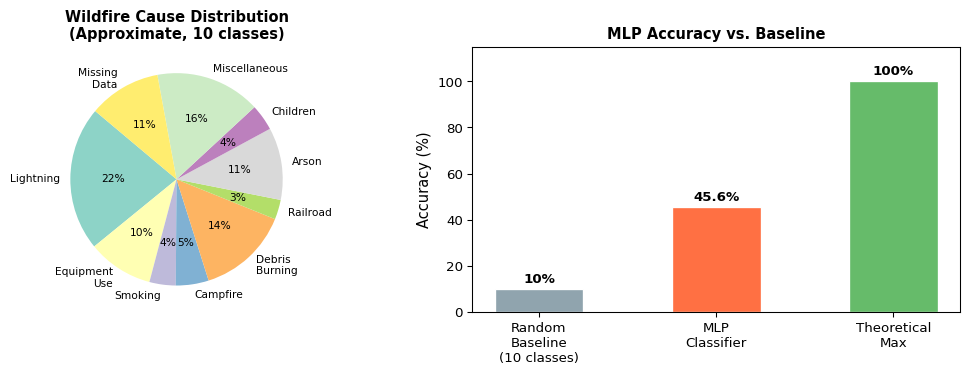
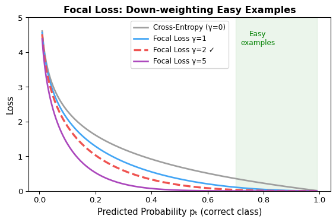
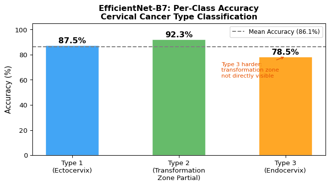

flowchart LR
A["Raw Data\n768 samples\n8 features"] --> B["Treat zeros\nas missing"]
B --> C["Regression\nImputation\n(5 features)"]
C --> D["Feature\nEngineering\n+ Resampling"]
D --> E["Train / Val\nSplit"]
E --> F["DNN\n64→32→16→1"]
F --> G["Binary\nClassification\n90.04% acc"]
style A fill:#e8f4f8,stroke:#2196F3
style G fill:#e8f8e8,stroke:#4CAF50
Machine Learning & Data Science
Assignments / 作業
Assignment 1 — Diabetes Prediction / 糖尿病預測
Task / 任務： Predict the onset of diabetes using the Pima Indians Diabetes dataset, with a focus on handling missing values through regression-based imputation, feature engineering, and resampling before training a deep neural network. 以 Pima Indians 糖尿病資料集為基礎，先用迴歸填補缺失值、進行特徵工程與資料重抽樣，再訓練深層神經網路進行二元分類。
Dataset / 資料集： Pima Indians Diabetes Dataset — 768 samples, 8 features
Method / 方法： Regression imputation → Feature engineering → Resampling → DNN
Pipeline Overview / 整體流程
Exploratory Data Analysis / 資料探索
Zero values in Glucose, BMI, BloodPressure, SkinThickness, and Insulin are treated as missing. After removing rows with missing values, 336 clean rows remain for fitting imputation models. 將 Glucose、BMI 等欄位的零值視為缺失。移除含缺失值的列後，336 筆乾淨資料用於訓練填補模型。

Key observations / 重要觀察：
- Glucose → Outcome correlation: 0.50 — strongest predictor of diabetes
- SkinThickness ↔︎ BMI: 0.71 — justifies using BMI to impute SkinThickness
- Insulin ↔︎ Glucose: 0.70 — justifies using Glucose to impute Insulin
- Age ↔︎ Pregnancies: 0.54 — expected biological relationship
Missing Value Imputation / 缺失值填補
flowchart TD
A["Outcome"] -->|"predicts"| B["Glucose"]
B -->|"predicts"| C["BMI"]
B -->|"predicts"| D["Insulin"]
C & B -->|"predict"| E["SkinThickness"]
F["Age"] & C -->|"predict"| G["BloodPressure"]
style A fill:#fff3e0,stroke:#FF9800
style B fill:#e3f2fd,stroke:#2196F3
style C fill:#e8f5e9,stroke:#4CAF50
style D fill:#fce4ec,stroke:#E91E63
style E fill:#f3e5f5,stroke:#9C27B0
style F fill:#fff3e0,stroke:#FF9800
style G fill:#e0f7fa,stroke:#00BCD4
# Fill Glucose using Outcome
X_train = df_non_missing[['Outcome']]
y_train = df_non_missing['Glucose']
model = LinearRegression()
model.fit(X_train, y_train)
# Fill BMI using Glucose
X_train = df_non_missing[['Glucose']]
y_train = df_non_missing['BMI']
# Fill Insulin using BMI + Glucose
X_train = df_non_missing[['BMI', 'Glucose']]
y_train = df_non_missing['Insulin']
# Fill BloodPressure using Age + BMI
X_train = df_non_missing[['Age', 'BMI']]
y_train = df_non_missing['BloodPressure']Model Architecture / 模型架構
flowchart LR
I["Input\n8+ features"] --> L1["Dense 64\nReLU"]
L1 --> L2["Dense 32\nReLU"]
L2 --> L3["Dense 16\nReLU"]
L3 --> O["Dense 1\nSigmoid\n→ Diabetes?"]
style I fill:#e8f4f8,stroke:#2196F3
style O fill:#e8f8e8,stroke:#4CAF50
model = Sequential()
model.add(Dense(64, input_dim=X_train.shape[1], activation='relu'))
model.add(Dense(32, activation='relu'))
model.add(Dense(16, activation='relu'))
model.add(Dense(1, activation='sigmoid'))Training Setup / 訓練設定
model.compile(
loss='binary_crossentropy',
optimizer='adam',
metrics=['accuracy']
)
model.fit(X_train, y_train, epochs=10, batch_size=32, validation_split=0.2)Results / 結果
| Metric | Value |
|---|---|
| Baseline accuracy (no imputation) | 74.03% |
| Final accuracy (with imputation + feature engineering + resampling) | 90.04% |
| Improvement | +16.01 pp |

Assignment 2 — US Wildfire Analysis / 美國野火分析與預測
Task / 任務： Analyze 1.88 million US wildfire records to model annual frequency trends using Poisson regression, and predict wildfire causes using a multi-layer perceptron. 分析 188 萬筆美國野火紀錄，用 Poisson 迴歸建立年度頻率趨勢模型，並以 MLP 預測野火成因。
Dataset / 資料集： US Wildfires (1992–2015) — 1,880,465 records, Kaggle
Method / 方法： Poisson Regression (trend analysis) + MLP (cause classification)
Poisson Regression / Poisson 迴歸
Models the annual count of wildfires as a function of year to estimate long-term trend. 建立野火年度數量對年份的 Poisson 迴歸，估計長期增長趨勢。
import statsmodels.api as sm
import statsmodels.formula.api as smf
poisson_model = smf.glm(
formula='Count ~ FIRE_YEAR',
data=fire_counts,
family=sm.families.Poisson()
).fit()
print(poisson_model.summary())/var/folders/r1/kfhndv_10_j0xvscg29hsmcc0000gn/T/ipykernel_99367/3506093347.py:20: UserWarning: Glyph 24180 (\N{CJK UNIFIED IDEOGRAPH-5E74}) missing from font(s) DejaVu Sans.
plt.tight_layout()
/var/folders/r1/kfhndv_10_j0xvscg29hsmcc0000gn/T/ipykernel_99367/3506093347.py:20: UserWarning: Glyph 20221 (\N{CJK UNIFIED IDEOGRAPH-4EFD}) missing from font(s) DejaVu Sans.
plt.tight_layout()
/var/folders/r1/kfhndv_10_j0xvscg29hsmcc0000gn/T/ipykernel_99367/3506093347.py:20: UserWarning: Glyph 21315 (\N{CJK UNIFIED IDEOGRAPH-5343}) missing from font(s) DejaVu Sans.
plt.tight_layout()
/var/folders/r1/kfhndv_10_j0xvscg29hsmcc0000gn/T/ipykernel_99367/3506093347.py:20: UserWarning: Glyph 20214 (\N{CJK UNIFIED IDEOGRAPH-4EF6}) missing from font(s) DejaVu Sans.
plt.tight_layout()
/Users/buttegg/.quarto-venv/lib/python3.12/site-packages/IPython/core/pylabtools.py:170: UserWarning: Glyph 21315 (\N{CJK UNIFIED IDEOGRAPH-5343}) missing from font(s) DejaVu Sans.
fig.canvas.print_figure(bytes_io, **kw)
/Users/buttegg/.quarto-venv/lib/python3.12/site-packages/IPython/core/pylabtools.py:170: UserWarning: Glyph 20214 (\N{CJK UNIFIED IDEOGRAPH-4EF6}) missing from font(s) DejaVu Sans.
fig.canvas.print_figure(bytes_io, **kw)
/Users/buttegg/.quarto-venv/lib/python3.12/site-packages/IPython/core/pylabtools.py:170: UserWarning: Glyph 24180 (\N{CJK UNIFIED IDEOGRAPH-5E74}) missing from font(s) DejaVu Sans.
fig.canvas.print_figure(bytes_io, **kw)
/Users/buttegg/.quarto-venv/lib/python3.12/site-packages/IPython/core/pylabtools.py:170: UserWarning: Glyph 20221 (\N{CJK UNIFIED IDEOGRAPH-4EFD}) missing from font(s) DejaVu Sans.
fig.canvas.print_figure(bytes_io, **kw)
MLP Model Architecture / MLP 模型架構
Features: FIRE_SIZE, LATITUDE, LONGITUDE, FIRE_YEAR, MONTH
flowchart LR
F["5 Features\nFIRE_SIZE\nLAT / LON\nYEAR / MONTH"] --> D1["Dense 64\nReLU"]
D1 --> DR1["Dropout 0.3"]
DR1 --> D2["Dense 64\nReLU"]
D2 --> DR2["Dropout 0.3"]
DR2 --> O["Dense N\nSoftmax\n→ Cause Class"]
style F fill:#e8f4f8,stroke:#2196F3
style O fill:#e8f8e8,stroke:#4CAF50
style DR1 fill:#fff3e0,stroke:#FF9800
style DR2 fill:#fff3e0,stroke:#FF9800
model = Sequential()
model.add(Dense(64, input_dim=X_train.shape[1], activation='relu'))
model.add(Dropout(0.3))
model.add(Dense(64, activation='relu'))
model.add(Dropout(0.3))
model.add(Dense(num_classes, activation='softmax'))
model.compile(
loss='categorical_crossentropy',
optimizer='adam',
metrics=['accuracy']
)Training Setup / 訓練設定
model.fit(X_train, y_train, epochs=20, batch_size=32, validation_split=0.2)
# Train/Test Split: 70/30Results / 結果
| Metric | Value |
|---|---|
| Wildfire cause prediction accuracy | ~45.6% |
| Poisson regression trend | +0.44% annual increase in wildfire frequency |
| Total records processed | 1,880,465 |
The relatively low classification accuracy reflects the inherent difficulty of attributing wildfire causes from geographic and temporal features alone. 分類準確率偏低，反映了僅依靠地理與時間特徵來判斷野火成因的固有難度。

Final Project — Cervical Cancer Screening / 子宮頸癌篩檢影像分類
Task / 任務： Classify cervical cell images into three types (Type 1, 2, 3) corresponding to different levels of cervical transformation zone, using transfer learning with EfficientNet-B7 and Focal Loss to handle class imbalance. 將子宮頸細胞影像分類為三種類型（Type 1/2/3），對應不同程度的子宮頸轉化帶，採用 EfficientNet-B7 遷移學習並以 Focal Loss 處理類別不平衡。
Dataset / 資料集： Intel & MobileODT Cervical Cancer Screening (Kaggle) — 3-class image classification
Method / 方法： EfficientNet-B7 (ImageNet pretrained, fine-tuned) + Focal Loss + Data Augmentation
Transfer Learning Strategy / 遷移學習策略
flowchart LR
A["ImageNet\nPretrained\nEfficientNet-B7"] --> B["Frozen\nBackbone\n(feature extraction)"]
B --> C["Custom\nClassifier Head\nLinear → 3 classes"]
C --> D["Fine-tune with\nFocal Loss\n(α=1, γ=2)"]
D --> E["Type 1 / 2 / 3\nPrediction"]
style A fill:#e3f2fd,stroke:#2196F3
style D fill:#fff3e0,stroke:#FF9800
style E fill:#e8f8e8,stroke:#4CAF50
Model Architecture / 模型架構
from torchvision.models import efficientnet_b7, EfficientNet_B7_Weights
model = efficientnet_b7(weights=EfficientNet_B7_Weights.IMAGENET1K_V1)
num_features = model.classifier[1].in_features
model.classifier[1] = nn.Linear(num_features, num_classes) # num_classes = 3
model = model.to(device)Focal Loss / Focal Loss 實作
Focal Loss down-weights easy examples and focuses training on hard, misclassified samples — especially useful for imbalanced class distributions. Focal Loss 降低簡單樣本的權重，讓訓練集中在難以分類的樣本，有效處理類別不平衡。

class FocalLoss(nn.Module):
def __init__(self, alpha=1, gamma=2, reduction="mean"):
super(FocalLoss, self).__init__()
self.alpha = alpha
self.gamma = gamma
self.reduction = reduction
def forward(self, inputs, targets):
ce_loss = nn.CrossEntropyLoss(reduction="none")(inputs, targets)
pt = torch.exp(-ce_loss)
focal_loss = self.alpha * (1 - pt) ** self.gamma * ce_loss
if self.reduction == "mean":
return focal_loss.mean()
elif self.reduction == "sum":
return focal_loss.sum()
return focal_loss
criterion = FocalLoss(alpha=1, gamma=2)Training Setup / 訓練設定
optimizer = optim.Adam(model.parameters(), lr=0.001)
num_epochs = 20
batch_size = 32
for epoch in range(num_epochs):
model.train()
for inputs, labels in train_loader:
inputs, labels = inputs.to(device), labels.to(device)
optimizer.zero_grad()
outputs = model(inputs)
loss = criterion(outputs, labels)
loss.backward()
optimizer.step()Results / 結果
| Class | Description | Accuracy |
|---|---|---|
| Type 1 | Ectocervix (fully visible transformation zone) | 87.5% |
| Type 2 | Partially visible transformation zone | 92.3% |
| Type 3 | Endocervix (transformation zone not visible) | 78.5% |
